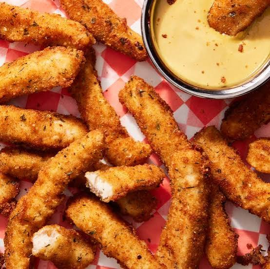

Ingredients
- 250 g pasta (like penne or fettuccine)
- 500 g chicken breast, cut into bite-sized pieces
- 3 tablespoons butter
- 3 cloves garlic, minced
- 1 cup heavy cream
- 1 cup chicken broth
- 1/2 cup parmesan cheese, grated
- 1 teaspoon salt
- 1/2 teaspoon black pepper
- 1 tablespoon olive oil
Method
- Cook the Pasta: Boil water in a large pot. Add salt and the pasta. Cook until tender, then drain and set aside.
- Cook the Chicken: Heat the olive oil in a large pan over medium heat. Add the chicken breast pieces. Cook until they are golden brown on all sides and cooked through. Remove the chicken from the pan and set it aside.
- Make the Sauce: In the same pan, melt the butter over medium heat. Add the minced garlic and cook for about 1 minute until it smells good.
- Simmer: Pour in the chicken broth and heavy cream. Add the salt and black pepper. Let the mixture simmer for 5 minutes until it thickens slightly.
- Combine: Turn the heat to low. Stir in the parmesan cheese until melted. Add the cooked chicken back into the pan and stir in the cooked pasta
- Serve: Toss everything together until the pasta is coated in the creamy sauce. Serve warm.
Description
This Creamy Garlic Parmesan Chicken Pasta delivers restaurant-quality flavor in under 30 minutes. Tender, golden-seared chicken and perfectly cooked pasta are tossed in a rich, velvety garlic-parmesan cream sauce. It is the ultimate quick, comforting weeknight dinner your family will love.